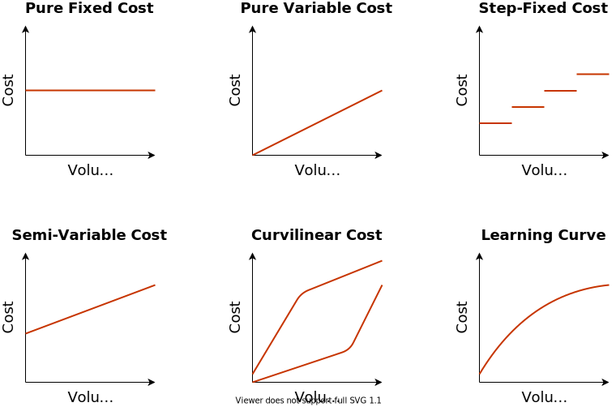
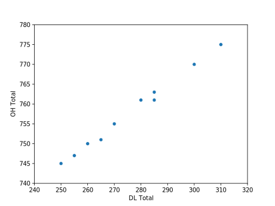
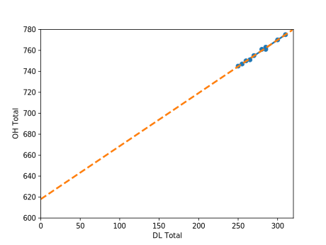
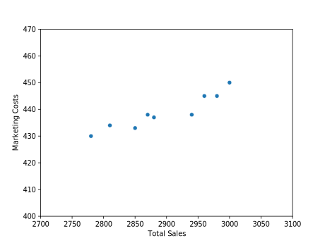
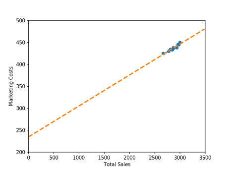

Strategic Cost Management
& New Technologies
Mario Milone
Session 02
Cost-Volume Profit
Outline
- Estimating Cost Functions.
- CVP Analysis:
- Breakeven Analysis.
- Sensitivity Analysis.
- Operating Leverage.
Estimating Cost Functions
Cost Behavior

How to estimate the cost functions?
Assume that costs are linear:
Total Cost = Fixed Costs + Variable Costs ∗ Activity Level
- Standard Cost Method.
- Gather information and estimate.
- Analysis of individual cost items.
- Visual fit.
- Scatter plot.
How to estimate the cost functions?
Regression Analysis
Yt = β0 + β1X1, t + εt
- Yt: Dependent variable (Cost).
- X1, t: Independent variable.
- β0: Fixed portion of the cost.
- β1: Variable portion of Yt.
- How much 1 unit of X1, t affects Yt.
How to estimate the cost functions?
You can add more stuff: Multiple regression
Yt = β0 + β1X1, t + β2X2, t + εt
- β1: Variable portion of Yt.
- How much 1 unit of X1, t affects Yt.
- β2: Variable portion of Yt.
- How much 1 unit of X2, t affects Yt.
How to estimate the cost functions?
What do we use regression analysis for?
- Classifying total costs into variable and fixed components
- Separating total OH into FOH and VOH
- Estimating manufacturing input costs
- Estimating OH consumption patterns and selecting OH allocation bases
- Using multiple bases to allocate OH costs
How to estimate the cost functions?
But there is no such thing as a silver bullet
- It requires a lot of data
- Intuition and reasoning is very important
- Relevant data?
- How to interpret the results?
How to estimate the cost functions?
But there is no such thing as a silver bullet
- Extrapolation is not a given
- External validity
- Are the costs really linear (when using OLS)?
- Should we think of using non-linear estimations?
- If so, how do we interpret them?
Example
Company with 3 products: A, B and C.
| A | B | C | |
|---|---|---|---|
| Sales Price | $20.00 | $10.00 | $30.00 |
| DM | $7.00 | $3.75 | $16.60 |
| DL | $2.00 | $1.00 | $3.50 |
| Factory OH | $5.00 | $2.50 | $8.75 |
| Marketing | $3.00 | $1.50 | $4.50 |
| Net Unit Profit | $3.00 | $1.25 | ($3.35) |
- The company decided to produce as few C products as possible.
- Increase production of product A.
- Start a promotional campaign to increase the sales of product A.
Example
Before giving the green light, management asked the controller’s office to make sure the numbers are correct.
- The controller estimated that:
- 20% of the factory OH was variable.
- 50% of the marketing costs were also variable.
Example
Contribution margins if the controller is correct
| A | B | C | |
|---|---|---|---|
| Sales Price | $20.00 | $10.00 | $30.00 |
| DM | $7.00 | $3.75 | $16.60 |
| DL | $2.00 | $1.00 | $3.50 |
| Variable Factory OH (20%) | $1.00 | $0.50 | $2.25 |
| Variable Marketing (50%) | $1.50 | $0.75 | $2.25 |
| Net Unit Profit | $8.50 | $4.00 | ($5.90) |
What should management do?
How can we check if the controller is correct?
Example
- Let’s get some more data.
2 production departments: Molding and Finishing.
A B C Molding 2 per hour 4 per hour 3 per hour Finishing 4 per hour 8 per hour 1.33 per hour
- What data do we need to verify the controller’s information?
- We want to predict the OH Cost as a function of (for example) DL\$
- We need OH cost and DL cost data
- We analyze both the Manufacturing OH and Marketing
Example
| Time | DL Molding | DL Finishing | DL Total | OH Molding | OH Finishing | OH Total | |
|---|---|---|---|---|---|---|---|
| 1 | 140 | 170 | 310 | 341 | 434 | 775 | |
| 2 | 135 | 150 | 285 | 340 | 421 | 761 | |
| 3 | 140 | 160 | 300 | 342 | 428 | 770 | |
| 4 | 130 | 150 | 280 | 339 | 422 | 761 | |
| 5 | 130 | 155 | 285 | 338 | 425 | 763 | |
| 6 | 125 | 140 | 265 | 337 | 414 | 751 | |
| 7 | 120 | 150 | 270 | 335 | 420 | 755 | |
| 8 | 115 | 140 | 255 | 334 | 413 | 747 | |
| 9 | 120 | 140 | 260 | 336 | 414 | 750 | |
| 10 | 115 | 135 | 250 | 335 | 410 | 745 |
Example

Example

Example

Y = 618 + 0.506X R2 = 0.993
Example
| Sales in Thousands | Costs | |||
|---|---|---|---|---|
| Product A | Product B | Product C | Total Sales | Marketing Costs |
| 2000 | 400 | 600 | 3000 | 450 |
| 1940 | 430 | 610 | 2980 | 445 |
| 1950 | 380 | 630 | 2960 | 445 |
| 1860 | 460 | 620 | 2940 | 438 |
| 1820 | 390 | 640 | 2850 | 433 |
| 1860 | 440 | 580 | 2880 | 437 |
| 1880 | 420 | 570 | 2870 | 438 |
| 1850 | 380 | 580 | 2810 | 434 |
| 1810 | 390 | 580 | 2780 | 430 |
| 1770 | 290 | 610 | 2670 | 425 |
Example

Example
Example

Y = 235 + 0.0705X R2 = 0.9085
Example
What did we learn?
- For Manufacturing Costs:
- Out of an average of 750 to 800 total manufacturing OH, around 620 seems to be fixed.
- Around 80% fixed costs, and 20% variable costs.
- For Marketing Costs:
- Out of an average of 430-450 total marketing cost, around 235 seems to be fixed.
- Roughly 50% fixed costs, and 50% variable costs.
The company’s controller seems to be on track.
Example
Can we do better?
What data can we use?
Can we be more precise?
Example
Sure. How about we let the manufacturing OH rates vary by department.
- Run a separate regression by department.
$$ \begin{align} OH_{molding} &= \alpha_{molding} + \beta_{molding} DL\$_{molding} \\ OH_{finishing} &= \alpha_{finishing} + \beta_{finishing} DL\$_{finishing} \end{align} $$
- We find
$$ \begin{align} \alpha_{molding} = 301 &, \beta_{molding} = 0.29 \\ \alpha_{finishing} = 316 &, \beta_{finishing} = 0.70 \end{align} $$
Example
The Variable OH is therefore
VOH = 0.29 ∗ DL$molding + 0.70 ∗ DL$finishing
How would that impact the contribution margins of the products?
Example
How would that impact the contribution margins of the products?
| A | B | C | |
|---|---|---|---|
| Molding | 2 per hour | 4 per hour | 3 per hour |
| Finishing | 4 per hour | 8 per hour | 1.33 per hour |
- It would penalize products that consume more finishing.
- Product C would look less attractive if OH varies by department.
CVP Analysis
CVP Analysis
- CVP uses fixed and variable cost patterns to asses the profitability of decisions.
- Product lines, investments,etc.
- Uses of CVP:
- Determine price floors.
- Simulation and sensitivity analysis.
- Breakeven analysis.
- Operating leverage.
- Budgeting.
CVP Analysis - Outline
Breakeven Analysis
- With and without uncertainty
Sensitivity Analysis
Operating Leverage
Breakeven Analysis
TODO: FINISH FROM HERE.
Example 1
A firm with 2 divisions sell 2 different products
How many boards does the first division need to break even?
How many discs does the second division need to sell to break even?
A firm with 2 divisions sell 2 different products
- The firm’s HQ generated no revenue but costs \$180,000.
- Will the firm break even if the 2 divisions sell the breakeven amounts previously calculated?
- Assume the following
- What is the breakeven number of units for each division if corporate OH is allocated on the basis of direct labor hours?
- Same question if OH allocated on the basis of machine hours?
OH allocated on the basis of DL hours
OH allocated on the basis of Machine hours
Breakeven Analysis – Multiple Products
Example 2 – Multiple Products
- A company sells 3 products with fixed costs of \$77,777
- What is the Weighted Average Contribution Margin per unit (WACM/unit)?
- Weighted average o the CM (weighted by the probability of being sold)
- What is the breakeven in units and in Sales?
A company sells 3 products with fixed costs of \$77,777
Breakeven Under Uncertainty
- So far, we have not incorporated the fact that the future is uncertain
- How likely are we to break even?
- We can try to estimate this probability
- We need to have an idea of the distribution of the variable of interest
- How are sales likely to be distributed?
- Normal Distribution?
- Uniform Distribution?
Example
Sensitivity Analysis
- How sensitive is our analysis to our assumptions?
- What will happen if
- Quantity of unit sold decreases?
- Prices changes?
- etc
Example
- Let us use the same example
- What would happen if price decrease by 10%?
- How would it change the breakeven point?
A 10% decrease in price increases the breakeven point by 16%
Operating Leverage
Example
What are the DOL and the effect on profit if sales increase by 100 units (10%)
Takeaways
- We have tools to understand how costs behave.
- Estimating cost functions can be done using quantitative methods
- Regression analysis
- Or other fancy prediction methods you like
- But always need to interpret the results and use economic intuition
- We have tools to understand how profits behave
- Breakeven analysis gives important information for strategic decision
- Uncertainty can be captured and sensitivity analysis allows to plan for different scenarios
- Don’t forget about operating leverage!